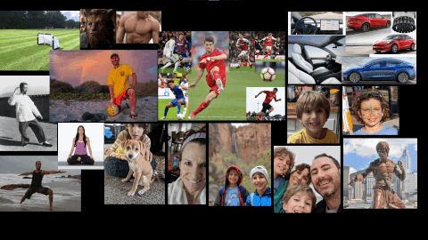

VisionBoard for Windows
I wrote a rather cool piece of software (if I do say so myself)...
 Create your own Vision Board.
Use pictures you have on your computer or find pictures on the Internet.
Set your Vision Board as you desktop background, or print a copy for your wall or the fridge, or watch your images fly as your screen saver (my personal favorite feature).
Before you know it, your visions will come to you!
Enjoy!